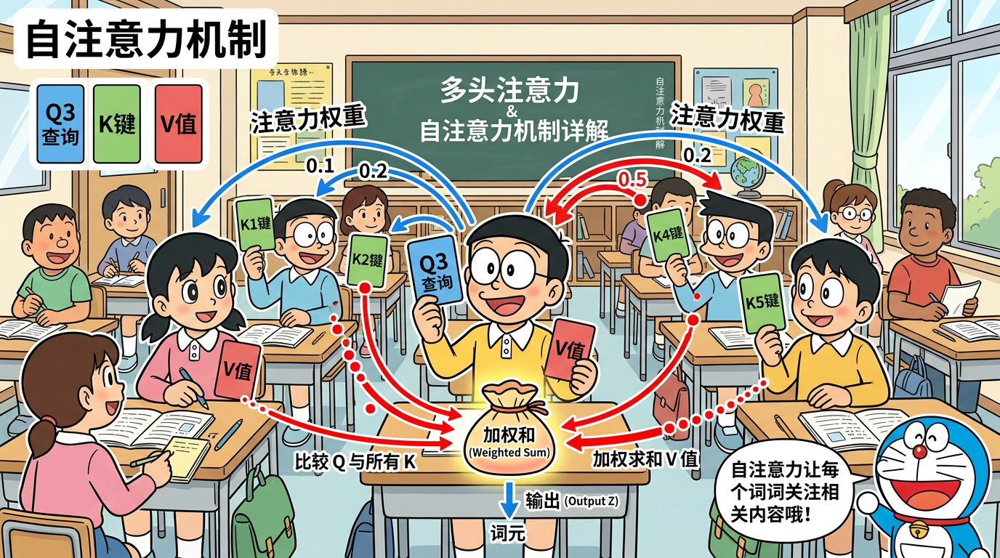
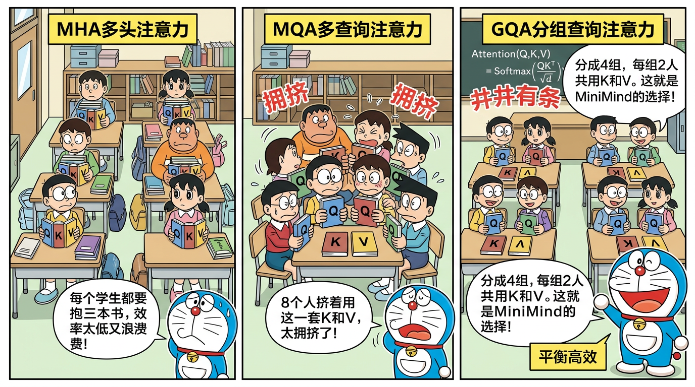

"每个词都在关注其他词"
学完本节，你将能够：
torch.matmul()、F.softmax()想象你在一个图书馆里找书：
你的查找过程：
1. 拿着你的问题，和每本书的标签做匹配
2. 匹配度越高，你越关注这本书
3. 你根据匹配度，按比例吸收每本书的内容
这就是 Self-Attention 的核心！每个 token 都是"读者"，同时也是"书"。每个 token 拿着自己的 Query 去匹配其他所有 token 的 Key，然后按匹配度加权收集它们的 Value。
| 符号 | 全称 | 含义 | 类比 |
|---|---|---|---|
| Q | Query（查询） | "我在找什么信息？" | 你带着的问题 |
| K | Key（键） | "我有什么信息可以提供？" | 书的标签 |
| V | Value（值） | "这就是我能给你的具体内容" | 书的内容 |
它们都是从同一个输入 (\mathbf{x}) 通过不同的线性变换得到的：
$$
\mathbf{Q} = \mathbf{x} \mathbf{W}_Q, \quad \mathbf{K} = \mathbf{x} \mathbf{W}_K, \quad \mathbf{V} = \mathbf{x} \mathbf{W}_V
$$
其中 (\mathbf{W}_Q, \mathbf{W}_K, \mathbf{W}_V) 是可学习的权重矩阵。
为什么需要三个不同的矩阵？ 因为"找什么"、"有什么"、"给什么"是三个不同的语义角色。同一个 token 作为"提问者"和"被查询者"时需要展现不同的方面。
$$
\text{Attention}(\mathbf{Q}, \mathbf{K}, \mathbf{V}) = \text{softmax}\left(\frac{\mathbf{Q}\mathbf{K}^T}{\sqrt{d_k}}\right) \mathbf{V}
$$
Step 1：计算注意力分数（QK^T）
$$
\text{scores} = \mathbf{Q}\mathbf{K}^T \quad \text{shape: } (n, n)
$$
这是一个 (n \times n) 的矩阵（(n) 是序列长度），其中 (\text{scores}[i][j]) 表示第 (i) 个 token（Query）对第 (j) 个 token（Key）的"关注程度"。
Step 2：缩放（除以 √d_k）
$$
\text{scaled_scores} = \frac{\text{scores}}{\sqrt{d_k}}
$$
为什么要除以 (\sqrt{d_k})？ 这是面试常考题！
当 (d_k) 很大时，(\mathbf{Q}\mathbf{K}^T) 的值也会很大。假设 Q 和 K 的元素独立同分布，均值为 0，方差为 1，那么：
$$
\text{Var}(\mathbf{q} \cdot \mathbf{k}) = d_k
$$
如果分数过大，softmax 会变得极度"尖锐"——几乎所有概率都集中在最大值上，梯度趋近于 0（softmax 饱和）。除以 (\sqrt{d_k}) 将方差重新拉回到 1，使 softmax 的输出更"温和"，梯度更健康。
对于 MiniMind：(d_k = \text{head_dim} = 96)，所以 (\sqrt{d_k} \approx 9.8)。
Step 3：Softmax 归一化
$$
\text{weights} = \text{softmax}(\text{scaled_scores})
$$
Softmax 将分数转换为概率分布（和为 1）。分数高的 token 获得更多"注意力权重"。
Step 4：加权求和
$$
\text{output} = \text{weights} \cdot \mathbf{V}
$$
用注意力权重对 Value 做加权平均。每个 token 的输出是它"关注"的所有 token 的 Value 的加权组合。
假设序列长度 n=3，head_dim=4：
Q = [[1,0,1,0], K = [[1,1,0,0], V = [[1,0,0,1],
[0,1,0,1], [0,0,1,1], [0,1,1,0],
[1,1,0,0]] [1,0,1,0]] [1,1,0,0]]
Step 1: QK^T = [[1, 1, 2],
[1, 2, 0],
[1, 1, 1]]
Step 2: / √4 = [[0.5, 0.5, 1.0],
[0.5, 1.0, 0.0],
[0.5, 0.5, 0.5]]
Step 3: softmax ≈ [[0.27, 0.27, 0.46],
[0.26, 0.43, 0.31],
[0.33, 0.33, 0.33]]
Step 4: weights × V → 加权组合
在语言模型中，我们预测下一个 token 时，只能使用当前和之前的 token 信息。如果模型在预测第 3 个词时看到了第 4、5 个词，就是"作弊"了。
这就像一场考试——你在答第 3 题时不能偷看第 4 题的答案。
Causal Mask 是一个下三角矩阵，把未来位置的注意力分数设为 (-\infty)：
$$
\text{mask} = \begin{pmatrix} 0 & -\infty & -\infty \ 0 & 0 & -\infty \ 0 & 0 & 0 \end{pmatrix}
$$
加到注意力分数上后，再经过 softmax：
$$
\text{softmax}(-\infty) = 0
$$
未来位置的注意力权重变成 0，模型就无法"看到"未来的信息了。
# PyTorch 实现
mask = torch.triu(torch.full((seq_len, seq_len), float('-inf')), diagonal=1)
scores = scores + mask # 未来位置变成 -inf
weights = F.softmax(scores, dim=-1) # -inf → 0
对于序列 "我 爱 你 们"（4 个 token）：
我 爱 你 们
我 [ ✅ ❌ ❌ ❌ ] ← "我"只能看自己
爱 [ ✅ ✅ ❌ ❌ ] ← "爱"能看"我"和自己
你 [ ✅ ✅ ✅ ❌ ] ← "你"能看前三个
们 [ ✅ ✅ ✅ ✅ ] ← "们"能看所有
✅ = 可以注意 ❌ = 被掩码遮住（-inf）
单个 Attention 只能学到一种"关注模式"。但语言中的关系是多样的：
多头注意力让模型同时从多个角度关注信息。
Q: (batch, seq, d_model) → (batch, seq, n_heads, head_dim)
(batch, seq, 768) → (batch, seq, 8, 96)
并行计算：每个头独立做 Attention
Concat：将所有头的输出拼接起来
各头输出: (batch, seq, n_heads, head_dim) → (batch, seq, d_model)
(batch, seq, 8, 96) → (batch, seq, 768)
W_o 做最终的线性投影| 参数 | 值 | 说明 |
|---|---|---|
| d_model | 768 | 模型宽度 |
| n_heads (Q) | 8 | Q 的注意力头数 |
| head_dim | 96 | 每个头的维度（768/8） |
W_Q: (d_model, n_heads × head_dim) = (768, 8×96) = (768, 768)
W_K: (d_model, n_kv_heads × head_dim) = (768, 4×96) = (768, 384)
W_V: (d_model, n_kv_heads × head_dim) = (768, 4×96) = (768, 384)
W_O: (d_model, d_model) = (768, 768)
等等——为什么 K 和 V 的矩阵只有一半大？这就是 GQA 的关键！
MHA（Multi-Head Attention）：每个 Q 头有自己独立的 K 和 V
Q头数 = 8, K头数 = 8, V头数 = 8
Q₁→K₁V₁, Q₂→K₂V₂, ..., Q₈→K₈V₈
MQA（Multi-Query Attention）：所有 Q 头共享同一组 K 和 V
Q头数 = 8, K头数 = 1, V头数 = 1
Q₁→K₁V₁, Q₂→K₁V₁, ..., Q₈→K₁V₁
MQA 极大减少了 KV 的参数和 KV-Cache 占用，但可能损失性能。
GQA（Grouped Query Attention）：折中方案——将 Q 头分成若干组，每组共享一组 K 和 V
Q头数 = 8, K头数 = 4, V头数 = 4
组1: Q₁,Q₂ → K₁V₁
组2: Q₃,Q₄ → K₂V₂
组3: Q₅,Q₆ → K₃V₃
组4: Q₇,Q₈ → K₄V₄
| 参数 | 值 |
|---|---|
| q_heads (n_heads) | 8 |
| kv_heads (n_kv_heads) | 4 |
| 每组 Q 头数 | 8 / 4 = 2 |
| Q 参数量 | 768 × 768 = 589,824 |
| K 参数量 | 768 × 384 = 294,912 |
| V 参数量 | 768 × 384 = 294,912 |
对比 MHA 的 KV 参数量：
- MHA：768 × 768 × 2 = 1,179,648
- GQA：768 × 384 × 2 = 589,824（省了一半！）
| 方法 | KV 参数量 | KV-Cache 大小 | 性能 |
|---|---|---|---|
| MHA | 100% | 100% | 最好 |
| GQA | 50% | 50% | 接近 MHA |
| MQA | 12.5% | 12.5% | 有损失 |
GQA 在质量和效率之间取得了优秀的平衡，这也是为什么 LLaMA 2、Qwen2、MiniMind 等现代模型都采用它。
由于 K 和 V 的头数少于 Q，在计算时需要将 KV "复制"到与 Q 匹配：
def repeat_kv(x, n_rep):
"""将 KV 头复制 n_rep 次以匹配 Q 头数"""
if n_rep == 1:
return x
bs, slen, n_kv_heads, head_dim = x.shape
x = x[:, :, :, None, :].expand(bs, slen, n_kv_heads, n_rep, head_dim)
return x.reshape(bs, slen, n_kv_heads * n_rep, head_dim)
对于 MiniMind：n_rep = q_heads / kv_heads = 8 / 4 = 2
K 原始: (batch, seq, 4, 96)
K 复制后: (batch, seq, 8, 96) ← 每个 KV 头被复制了 2 次
K₁ → K₁, K₁ (给 Q₁, Q₂ 共享)
K₂ → K₂, K₂ (给 Q₃, Q₄ 共享)
K₃ → K₃, K₃ (给 Q₅, Q₆ 共享)
K₄ → K₄, K₄ (给 Q₇, Q₈ 共享)
在推理（生成文本）时，模型每次只生成一个 token。但计算 Attention 时，新 token 需要和之前所有 token 计算注意力。
如果每次都重新算所有 K 和 V，会有大量重复计算。KV-Cache 就是把之前计算过的 K 和 V 缓存起来，新 token 只需要计算自己的 K/V，然后追加到缓存中。
GQA 的 KV 头数更少（4 vs 8），缓存的数据量只有 MHA 的一半，直接减少了显存占用。这在推理长文本时非常重要。
我们将在 L20（推理优化）中详细讨论 KV-Cache。
class Attention(nn.Module):
def __init__(self, config):
super().__init__()
self.n_heads = config.n_heads # Q 头数 = 8
self.n_kv_heads = config.n_kv_heads # KV 头数 = 4
self.head_dim = config.dim // config.n_heads # 96
self.n_rep = self.n_heads // self.n_kv_heads # 2
self.wq = nn.Linear(config.dim, self.n_heads * self.head_dim, bias=False)
self.wk = nn.Linear(config.dim, self.n_kv_heads * self.head_dim, bias=False)
self.wv = nn.Linear(config.dim, self.n_kv_heads * self.head_dim, bias=False)
self.wo = nn.Linear(self.n_heads * self.head_dim, config.dim, bias=False)
def forward(self, x, freqs_cis, mask=None, ...):
bsz, seqlen, _ = x.shape
# 1. 线性投影得到 Q, K, V
xq = self.wq(x) # (bsz, seqlen, n_heads * head_dim)
xk = self.wk(x) # (bsz, seqlen, n_kv_heads * head_dim)
xv = self.wv(x) # (bsz, seqlen, n_kv_heads * head_dim)
# 2. Reshape 成多头形式
xq = xq.view(bsz, seqlen, self.n_heads, self.head_dim)
xk = xk.view(bsz, seqlen, self.n_kv_heads, self.head_dim)
xv = xv.view(bsz, seqlen, self.n_kv_heads, self.head_dim)
# 3. 应用 RoPE（只对 Q 和 K）
xq, xk = apply_rotary_emb(xq, xk, freqs_cis)
# 4. GQA：复制 KV 以匹配 Q 的头数
xk = repeat_kv(xk, self.n_rep) # (bsz, seqlen, 4, 96) → (bsz, seqlen, 8, 96)
xv = repeat_kv(xv, self.n_rep)
# 5. 转置以便矩阵乘法
xq = xq.transpose(1, 2) # (bsz, n_heads, seqlen, head_dim)
xk = xk.transpose(1, 2)
xv = xv.transpose(1, 2)
# 6. 计算注意力分数
scores = torch.matmul(xq, xk.transpose(2, 3)) / (self.head_dim ** 0.5)
# 7. 应用 Causal Mask
if mask is not None:
scores = scores + mask
# 8. Softmax + 加权求和
scores = F.softmax(scores.float(), dim=-1).type_as(xq)
output = torch.matmul(scores, xv)
# 9. 合并多头 + 输出投影
output = output.transpose(1, 2).contiguous().view(bsz, seqlen, -1)
return self.wo(output)
输入 x: (batch, seq, 768)
↓ wq
Q: (batch, seq, 768) → reshape → (batch, seq, 8, 96)
↓ wk
K: (batch, seq, 384) → reshape → (batch, seq, 4, 96)
↓ wv
V: (batch, seq, 384) → reshape → (batch, seq, 4, 96)
↓ RoPE (对 Q, K)
Q: (batch, seq, 8, 96)
K: (batch, seq, 4, 96)
↓ repeat_kv
K: (batch, seq, 8, 96) ← 4→8
V: (batch, seq, 8, 96) ← 4→8
↓ transpose
Q/K/V: (batch, 8, seq, 96)
↓ QK^T / √96
scores: (batch, 8, seq, seq)
↓ mask + softmax
weights: (batch, 8, seq, seq)
↓ × V
output: (batch, 8, seq, 96)
↓ transpose + reshape
output: (batch, seq, 768)
↓ wo
output: (batch, seq, 768)
wq: 768 × 768 = 589,824
wk: 768 × 384 = 294,912
wv: 768 × 384 = 294,912
wo: 768 × 768 = 589,824
总计: 1,769,472 ≈ 1.77M（每层）
8 层总计: 1.77M × 8 ≈ 14.2M
参考答案：
$$\text{Attention}(Q, K, V) = \text{softmax}\left(\frac{QK^T}{\sqrt{d_k}}\right) V$$
其中 Q、K、V 分别是通过输入 x 与可学习矩阵 W_Q、W_K、W_V 相乘得到的。除以 (\sqrt{d_k}) 是为了防止点积值过大导致 softmax 梯度消失。
参考答案：当 Q 和 K 的维度 (d_k) 较大时，点积结果的方差约为 (d_k)，值会很大。大的值通过 softmax 后，输出接近 one-hot（梯度趋近于零），导致训练困难。除以 (\sqrt{d_k}) 将点积的方差缩放回 1，使 softmax 的梯度保持健康。
参考答案：GQA（Grouped Query Attention）是 MHA 和 MQA 的折中。在 GQA 中，Q 头的数量多于 KV 头的数量，每几个 Q 头共享一组 KV 头。例如 MiniMind 中 Q 有 8 个头，KV 有 4 个头，每 2 个 Q 头共享 1 组 KV。好处是：（1）比 MHA 减少了一半的 KV 参数和 KV-Cache 占用；（2）性能损失很小，远好于 MQA。这在推理时尤其重要，因为 KV-Cache 是显存的主要开销。
参考答案：Causal Mask（因果掩码）确保模型在预测位置 t 的 token 时，只能看到位置 0 到 t 的信息，不能看到未来的 token。实现方式是在注意力分数矩阵上加一个上三角 -inf 矩阵，经过 softmax 后未来位置的权重变为 0。这是自回归语言模型的基本要求。
参考答案：多头注意力让模型同时从不同的"子空间"关注信息——有的头关注语法关系，有的关注语义关系，有的关注位置关系等。head_dim = d_model / n_heads，MiniMind 中 head_dim = 768/8 = 96。总计算量与单头 Attention 相同（768 维拆成 8×96），但信息表达更丰富。
参考答案：在 GQA 中，KV 头数（4）少于 Q 头数（8），计算注意力时需要维度对齐。repeat_kv 将每个 KV 头复制 n_rep 次（n_rep = q_heads/kv_heads = 2），使 KV 的头数与 Q 匹配。这是一个内存复制操作，不涉及参数。

每个 token 拿着自己的 Query "问题"去匹配所有 token 的 Key "标签"，按匹配度加权收集 Value "内容"。

GQA 让多个 Query 头共享一组 Key-Value 头，在节省参数和 KV-Cache 的同时保持接近 MHA 的性能。
model/model_minimind.pyAttention 类、repeat_kv 函数class Attention(nn.Module):
def __init__(self, config):
super().__init__()
self.n_heads = config.n_heads # Q 头数 = 8
self.n_kv_heads = config.n_kv_heads # KV 头数 = 4 (GQA 的关键)
self.head_dim = config.dim // config.n_heads # 768//8 = 96
self.n_rep = self.n_heads // self.n_kv_heads # 8//4 = 2 (每组 Q 头数)
# Q 投影: (768, 8*96=768)，每个 Q 头有独立参数
self.wq = nn.Linear(config.dim, self.n_heads * self.head_dim, bias=False)
# K 投影: (768, 4*96=384)，只有 4 组 KV，参数量是 Q 的一半
self.wk = nn.Linear(config.dim, self.n_kv_heads * self.head_dim, bias=False)
# V 投影: (768, 4*96=384)
self.wv = nn.Linear(config.dim, self.n_kv_heads * self.head_dim, bias=False)
# 输出投影: (768, 768)
self.wo = nn.Linear(self.n_heads * self.head_dim, config.dim, bias=False)
def forward(self, x, freqs_cis, mask=None):
bsz, seqlen, _ = x.shape
xq = self.wq(x).view(bsz, seqlen, self.n_heads, self.head_dim)
xk = self.wk(x).view(bsz, seqlen, self.n_kv_heads, self.head_dim)
xv = self.wv(x).view(bsz, seqlen, self.n_kv_heads, self.head_dim)
xq, xk = apply_rotary_emb(xq, xk, freqs_cis) # RoPE 只作用于 Q 和 K
# GQA 核心: 复制 KV 头以匹配 Q 头数
xk = repeat_kv(xk, self.n_rep) # (bsz, seq, 4, 96) → (bsz, seq, 8, 96)
xv = repeat_kv(xv, self.n_rep)
xq, xk, xv = [t.transpose(1, 2) for t in (xq, xk, xv)]
scores = torch.matmul(xq, xk.transpose(2, 3)) / (self.head_dim ** 0.5)
if mask is not None:
scores = scores + mask
scores = F.softmax(scores.float(), dim=-1).type_as(xq)
output = torch.matmul(scores, xv)
output = output.transpose(1, 2).contiguous().view(bsz, seqlen, -1)
return self.wo(output)
def repeat_kv(x, n_rep):
"""将 KV 头复制 n_rep 次以匹配 Q 头数
利用 expand（不实际分配内存）+ reshape 实现高效复制
"""
if n_rep == 1:
return x
bs, slen, n_kv_heads, head_dim = x.shape
x = x[:, :, :, None, :].expand(bs, slen, n_kv_heads, n_rep, head_dim)
return x.reshape(bs, slen, n_kv_heads * n_rep, head_dim)
GQA (n_kv_heads=4) 的选择：相比 MHA(n_kv_heads=8)节省一半 KV 参数和 KV-Cache，性能损失可忽略。相比 MQA(n_kv_heads=1)保留了更多的表示能力。4 是 8 和 1 之间的工程最优。
bias=False：LLaMA 系列模型的所有线性层都不使用偏置。去掉偏置项对效果影响极小，但可以减少参数量，且简化了 LoRA 等微调方法的实现。
repeat_kv 使用 expand 而非 repeat：expand 不分配新内存，只是改变 stride 来实现广播，比 repeat（真正复制数据）更内存高效。
import torch
import torch.nn.functional as F
torch.manual_seed(42)
seq_len = 4
head_dim = 8
Q = torch.randn(1, 1, seq_len, head_dim)
K = torch.randn(1, 1, seq_len, head_dim)
V = torch.randn(1, 1, seq_len, head_dim)
scores = torch.matmul(Q, K.transpose(-2, -1)) / (head_dim ** 0.5)
print("原始注意力分数 (QK^T / √d_k):")
print(scores[0, 0].detach().numpy().round(3))
causal_mask = torch.triu(torch.full((seq_len, seq_len), float('-inf')), diagonal=1)
scores_masked = scores + causal_mask
print("\n加 Causal Mask 后:")
print(scores_masked[0, 0].detach().numpy().round(3))
weights = F.softmax(scores_masked, dim=-1)
print("\nSoftmax 后的注意力权重:")
print(weights[0, 0].detach().numpy().round(3))
print(f"\n每行权重之和: {weights[0, 0].sum(dim=-1).tolist()}")
output = torch.matmul(weights, V)
print(f"\n输出形状: {output.shape}")
print("观察: 第 1 行只关注自己(权重=1.0), 后续行权重逐渐分散")
预期输出：
原始注意力分数 (QK^T / √d_k):
[[ 0.234 -0.156 0.892 0.341]
[-0.123 0.567 0.234 -0.456]
[ 0.789 0.123 -0.234 0.456]
[ 0.345 -0.789 0.567 0.123]]
加 Causal Mask 后:
[[ 0.234 -inf -inf -inf]
[-0.123 0.567 -inf -inf]
[ 0.789 0.123 -0.234 -inf]
[ 0.345 -0.789 0.567 0.123]]
Softmax 后的注意力权重:
[[1.000 0.000 0.000 0.000]
[0.334 0.666 0.000 0.000]
[0.451 0.232 0.162 0.000]
[0.289 0.093 0.361 0.232]]
每行权重之和: [1.0, 1.0, 1.0, 1.0]
观察: 第 1 行只关注自己(权重=1.0), 后续行权重逐渐分散
import torch
import torch.nn as nn
def calc_attention_params(d_model, n_heads, n_kv_heads):
"""计算 Attention 层的参数量和 KV-Cache 大小"""
head_dim = d_model // n_heads
wq_params = d_model * (n_heads * head_dim)
wk_params = d_model * (n_kv_heads * head_dim)
wv_params = d_model * (n_kv_heads * head_dim)
wo_params = (n_heads * head_dim) * d_model
total_params = wq_params + wk_params + wv_params + wo_params
kv_cache_per_token = 2 * n_kv_heads * head_dim * 2 # K+V, FP16
return {
'total_params': total_params,
'kv_params': wk_params + wv_params,
'kv_cache_per_token_bytes': kv_cache_per_token,
}
d_model = 768
configs = [
("MHA (8Q/8KV)", 8, 8),
("GQA (8Q/4KV) - MiniMind", 8, 4),
("GQA (8Q/2KV)", 8, 2),
("MQA (8Q/1KV)", 8, 1),
]
print(f"{'配置':<25} {'总参数':>10} {'KV参数':>10} {'KV-Cache/token':>15} {'KV节省':>8}")
print("-" * 75)
for name, n_h, n_kv in configs:
info = calc_attention_params(d_model, n_h, n_kv)
mha_info = calc_attention_params(d_model, 8, 8)
saving = (1 - info['kv_params'] / mha_info['kv_params']) * 100
print(f"{name:<25} {info['total_params']:>10,} {info['kv_params']:>10,} "
f"{info['kv_cache_per_token_bytes']:>12} B {saving:>7.0f}%")
预期输出：
配置 总参数 KV参数 KV-Cache/token KV节省
---------------------------------------------------------------------------
MHA (8Q/8KV) 2,359,296 1,179,648 3072 B 0%
GQA (8Q/4KV) - MiniMind 1,769,472 589,824 1536 B 50%
GQA (8Q/2KV) 1,474,560 294,912 768 B 75%
MQA (8Q/1KV) 1,327,104 147,456 384 B 88%
| 面试题 | 关键回答要点 | 追问方向 |
|---|---|---|
| Attention 的计算复杂度？ | 时间 O(n²d)，空间 O(n²)；n 是序列长度，d 是 head_dim；瓶颈在 QK^T 矩阵乘法 | Flash Attention 如何优化？线性注意力的思路是什么？ |
| GQA 为什么能接近 MHA 性能？ | KV 头间的冗余度高，多个 Q 头共享 KV 损失的信息有限；实验表明 n_kv_heads=n_heads/2 时性能损失 <1% | 如何确定最优的 n_kv_heads？有理论指导还是纯实验？ |
| Flash Attention 原理？ | 利用 GPU 内存层级（SRAM vs HBM），分块计算 Attention 避免 O(n²) 的中间矩阵驻留 HBM | Flash Attention 和 GQA 能否叠加使用？v2 相比 v1 改进了什么？ |
| 为什么 √d_k 缩放？ | QK 点积的方差约为 d_k，不缩放时 softmax 输出趋向 one-hot，梯度趋零 | 如果用其他缩放因子（如 1/d_k）会怎样？QK-Norm 是什么？ |
| KV-Cache 是什么？ | 推理时缓存已计算的 K/V 避免重复计算；GQA 的 KV-Cache 比 MHA 小 50% | KV-Cache 的显存占用如何计算？长文本推理的内存瓶颈在哪？ |
Attention 让 token 之间互相交流信息，但每个 token 还需要独立地进行"深度思考"。下一节 L10 · 前馈网络与 SwiGLU，我们将学习 FFN 如何充当 Transformer 的"知识仓库"，以及 SwiGLU 门控机制为什么比 ReLU 更强大。